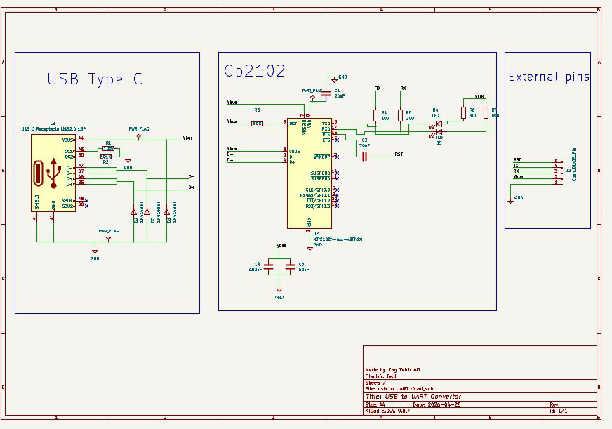
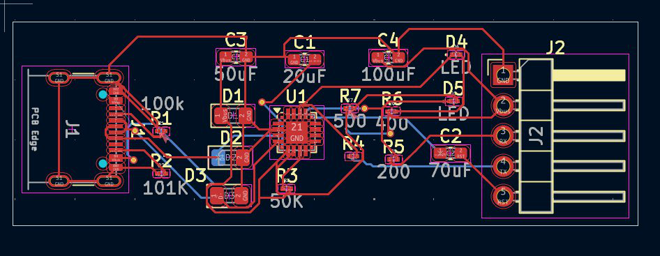

Home / Work / USB to UART Converter
USB to UART Converter Board

- Tool
- KiCad
- Bridge IC
- CP2102
- Connector
- USB Type-C
- Output
- 5-pin header
- Protection
- ESD diodes on D+/D−
- Indicators
- TX / RX LEDs
- Verification
- DRC + ERC
01The challenge
A small bridge board with a USB Type-C receptacle on the host side and a 5-pin header on the output, keeping the footprint compact while protecting the data lines and showing traffic on TX/RX LEDs.
02My role
- Schematic capture and PCB layout in KiCad
- Compact two-layer routing
- DRC/ERC verification and Gerber export
03Engineering approach
- CP2102 bridge chip with ESD protection diodes on both USB data lines.
- TX and RX status LEDs for a visual read on traffic.
- 100k / 101k resistor network in the signal path.
- Header pinout: 3.3 V / 5 V / TX / RX / GND.
04PCB design
Layout3D board

05Verification
DRC and ERC were run and reviewed before Gerber export.
06Final output
- Gerber export
- Manufacturing output prepared for JLCPCB, PCBWay and OSHPark
07Project result
A compact, protected USB-to-UART bridge taken from schematic through to Gerber export.